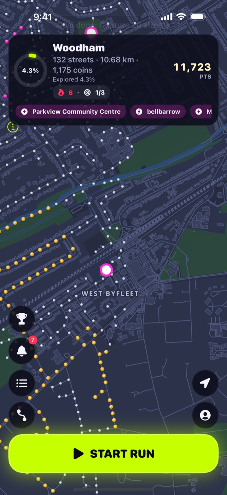
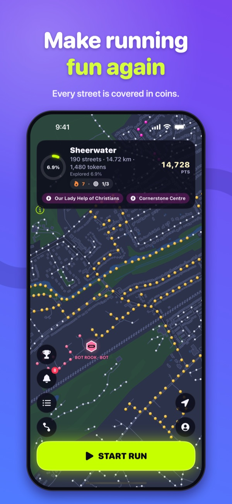
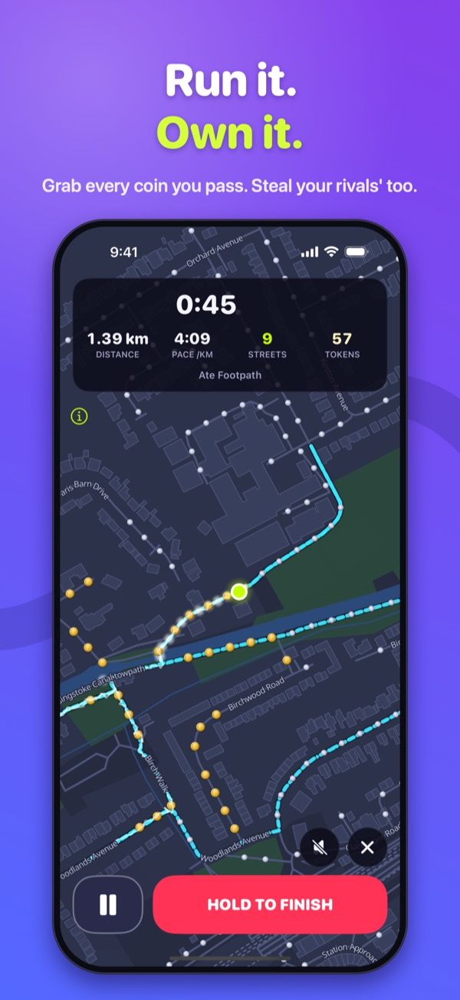
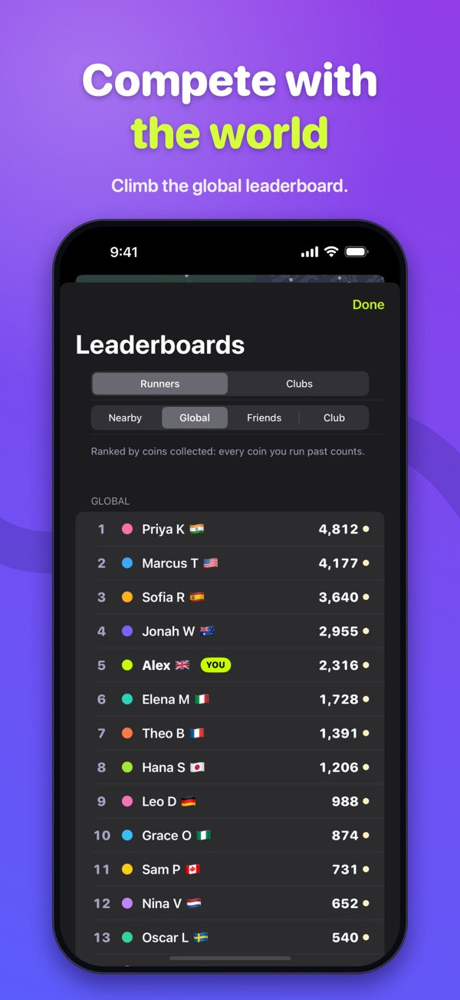
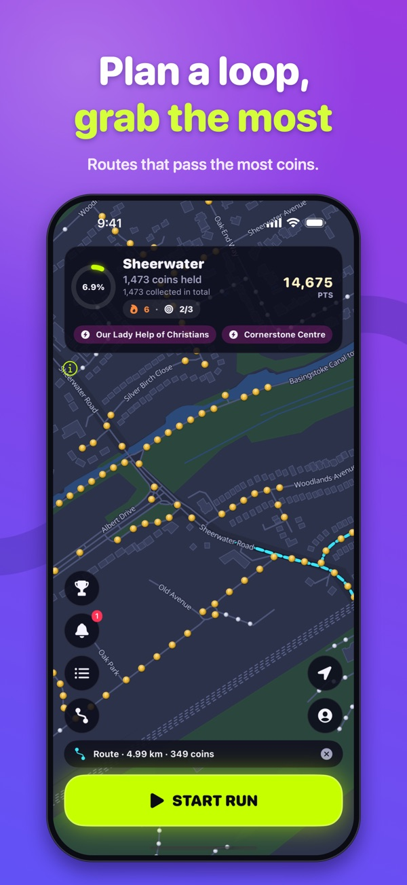
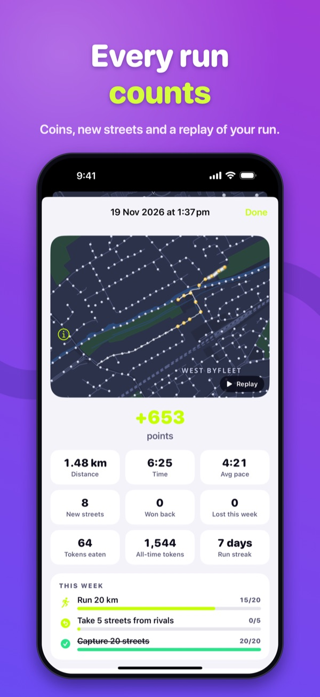
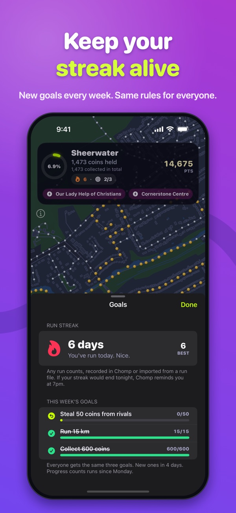
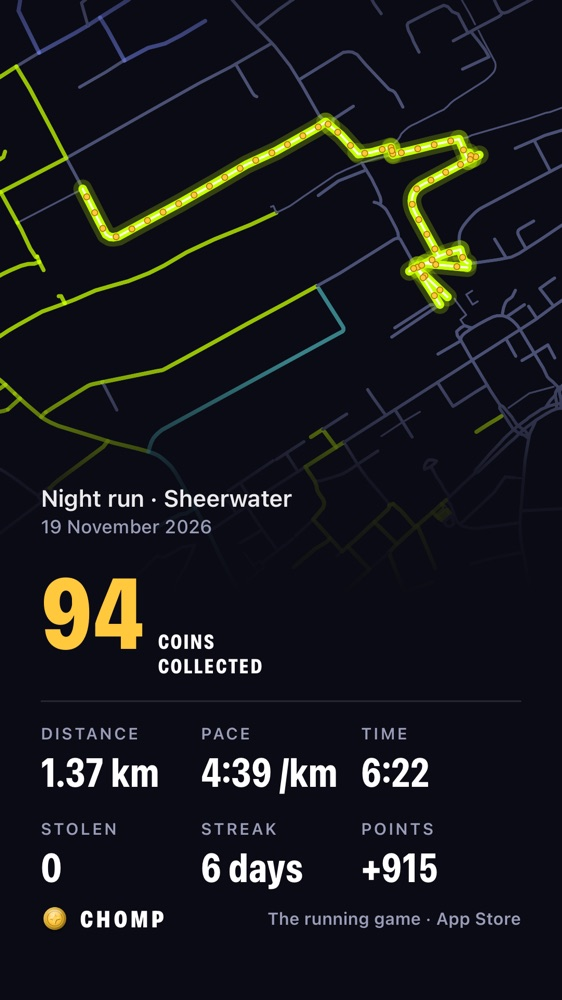

Run past coins
Roads and paths are lined with silver coins. Run past them and they turn gold: they're yours. The pavement counts for the road.
The map around you is covered in coins. Run past them to make them yours, steal your rivals' and climb the leaderboard, from your neighbourhood to the whole world.

No routes to follow and no fixed town. Wherever you run, the map around you becomes the game board.
Roads and paths are lined with silver coins. Run past them and they turn gold: they're yours. The pavement counts for the road.
Your coins stay yours until someone runs past them. Steal your rivals' coins, then run past yours again to defend your patch.
Rankings count the coins you've collected: nearby, worldwide, with friends and in your club.






Built for people who love running, and for people who need a reason to go.
Built from OpenStreetMap wherever you run: at home, at work or on holiday.
Reach a glowing landmark to start a 10-minute frenzy: double points, and rivals' coins are easier to steal.
Start or join a club. Every coin members collect counts towards the club's tally.
Pick a distance and get a loop that grabs the most coins for it.
Twenty badges to earn, weekly goals and a streak that keeps you honest.
Forgot to press start? Add the run from Garmin Connect, Apple Watch or Strava afterwards and it still collects coins.
Privacy zones hide where your runs start and end. No one sees your live location or your routes.
Driving, cycling and GPS tricks don't count. Every run is checked.
After every run, Chomp makes a card for your Story with where you ran, the coins you collected and your pace.

Share your invite code from the app. Your friend gets a month of Chomp Pro free when they join, and you get a month when they finish their first run.
Yes. Running, collecting and stealing coins, leaderboards, joining clubs and importing runs are all free. Chomp Pro is an optional subscription for extras like starting a club, detailed stats and heatmaps, custom colours and trails, and Strava history import. Pro never helps you capture or defend a street.
Almost certainly. Streets come from OpenStreetMap, which covers nearly everywhere. Open the app and the streets around you load automatically.
No. Running the pavement counts for the road next to it. Every coin you pass is yours.
No one ever sees your live location or your full routes. Add a privacy zone around home and runs that start or end there are trimmed on your phone before anything is uploaded. Or play fully private and keep everything on your phone.
Export it as a GPX file from Garmin Connect, Strava or Apple Health and share it to Chomp. Runs from the last 7 days still collect coins.
Chomp is built for running, but any run or walk on foot that you record counts. Cycling, driving and GPS tricks don't.